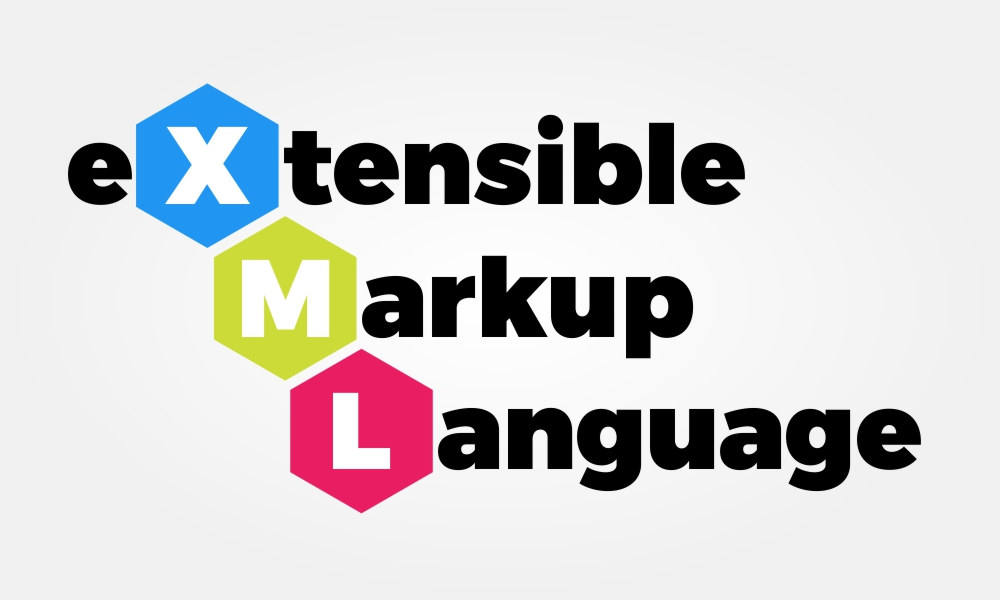

|
Tematika:
- XML nyelv áttekintése; XML kialakulása; helyesen formált XML, névterek ls szimbólumok; DTD séma
- XMLschema szerepe, áttekintése, séma elemek: jelölő elemek és típusok megadása;
- Összetett XMLschema séma elemek: származtatott típusok, megszorítások.
- DOM API szabvány szerepe, működése; XML feldolgozás lépései Java DOM környezetben; XML módosítási funkciói; XML szerializálása.
- Az XPath szabvány kezelése, Xpath szerepe, elemi Xpath komponensei; összetett XPath használata; XPath függvények.
- XSLT nyelv szerepe; XSLT minta megadási módok; XSLT transzformációs parancsok, ciklusok, elágazások; Összetett XSLT transzformációs parancsok,
- JSON formátum áttekintése; helyesen formált JSON; JSON séma elemei; JSON-XML konverzió
- JSON API szerepe, áttekintése; JSON parser funkciók Java, JavaScript, Python környezetben, GSON feldolgozó.
- Kliens oldali adat perzisztencia lehetőségei, localstore mechanizmus működése és programozása; IndexedDB mechanizmus működése és programozása;
- Szerver oldali DB adat perzisztencia, SQL és noSQL modellek, CAP tétel, tranzakciók
- Felhő alapú adatkezelés architektúrája; Oracle Cloud használat áttekintése, Docker adatbázisok, Cloud alapú adatelérés gyakorlása Java-ból,
- Adatbázis API-k áttekintése, JDBC, ORMS, Restful APOI és GraphQL
- Elosztott DBMS rendszerek és MapReduce architektúrák; MapReduce funkcionális modellje, keretrendszerei
|

|